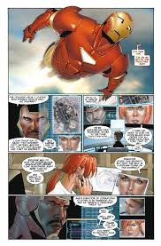
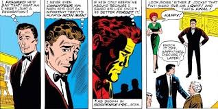
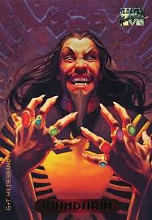
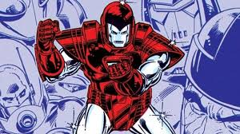

Quem o Homem de ferro é
Sua historia
O Homem de Ferro é um dos personagens mais complexos da Marvel. Normalmente, as histórias de origem dos super-heróis explicam como eles receberam seus poderes e o que eles decidem fazer com eles, mas o 'superpoder' de Tony é construir armas realmente boas, então sua própria história de origem tem que explicar por que ele faz isso. O conto clássico de suas origens é que, após a morte de Howard e Maria Stark em um acidente de carro, Tony herda a empresa de seu pai. Enquanto supervisiona uma fábrica em um país estrangeiro, Tony é sequestrado por terroristas locais que tentam forçá-lo a construir armas para eles.
Seus poderes
Tony Stark é conhecido por ser um excêntrico bilionário que deixou de lado a indústria armamentista após ver as terríveis consequências de seus negócios. Porém, para além disso, ele é reconhecido por sua genialidade. E, com toda a sua inteligência, Tony inventou uma incrível armadura, a qual rendeu a ele o nome de Homem de Ferro. Seus poderes vêm, basicamente, de seu traje. Equipado com uma Inteligência Artificial (AI) – primeiro chamada JARVIS e, depois, com o nome de FRIDAY – o equipamento permite que Stark voe. Também é graças a essa AI que ele consegue se conectar a diferentes sistemas enquanto voa, tendo acesso a um grande banco de dados sobre seus inimigos, informações sobre locais, fatos e afins. Sempre em constante atualização, o traje do Homem de Ferro também conta com a nanotecnologia. É graças a isso que a armadura consegue ficar armazenada dentro de um reator que Tony Stark carrega em seu peito.
Amores...
Nos quadrinhos: Tony Stark teve um número bem maior de relacionamentos. Alguns dos mais notáveis incluem: Pepper Potts Assim como nos filmes, Pepper é uma figura importante. Nos quadrinhos, ela chegou a se casar com Happy Hogan, mas sempre teve uma forte ligação com Tony. Bethany Cabe Segurança particular e uma das relações mais sérias de Tony nos quadrinhos. Whitney Frost (Madame Máscara) Uma vilã com quem Tony teve um relacionamento complicado e intenso. Rumiko Fujikawa Empresária japonesa que teve um romance importante com Tony, mas a relação foi marcada por conflitos. Maria Hill Agente da S.H.I.E.L.D.; em algumas histórias, há envolvimento romântico com Tony. Janet van Dyne (Vespa) Em algumas versões alternativas e histórias específicas, Tony teve um relacionamento com a Vespa. She-Hulk (Jennifer Walters) Em alguns universos alternativos e breves arcos nos quadrinhos, eles se envolvem romanticamente.
Amigos
Jemes Rhodes 1994
James Rhodes é o melhor amigo de Tony Stark e também um ex-militar. Quando Tony é dado como morto nos quadrinhos, Rhodey assume a armadura do Homem de Ferro por um tempo. Mas mais tarde, ele ganha sua própria armadura como Máquina de Combate (War Machine). 🔥 Por que essa história é importante: Mostra a confiança de Tony em Rhodey, e como Rhodey, mesmo sem ser um gênio bilionário, assume a responsabilidade de proteger o mundo. A amizade deles é forte, mas também marcada por tensão quando os dois discordam sobre como usar a tecnologia.
Pepper Potts 2008
Nessa série moderna, Tony enfrenta Ezekiel Stane, filho de Obadiah Stane. Ezekiel usa tecnologia baseada na do Homem de Ferro para criar terroristas com habilidades avançadas. Durante os ataques, Pepper Potts é gravemente ferida, e Tony salva sua vida com tecnologia parecida com a dele — um reator no peito. 💖 Por que essa história é importante: Tony não é só o chefe de Pepper — eles têm uma amizade profunda, com lealdade e afeto mútuos. Aqui, ele literalmente salva a vida dela e dá a ela a chance de ser uma heroína também.
Happy Horgan 1998
Happy Hogan, ex-lutador e motorista de Tony Stark, é um dos amigos mais antigos dele. Em The Iron Age, vemos como Tony lida com o fardo de ser um herói e como Happy sempre esteve ao lado dele, mesmo nos momentos mais sombrios — como quando Tony enfrenta o alcoolismo e a culpa por suas criações. 👊 Por que é especial: Happy é leal, corajoso e o lembra constantemente de sua humanidade. A história destaca como amizades reais podem ser mais importantes que qualquer armadura ou tecnologia.Antiamigos
Mandarim
Mandarim é um dos maiores inimigos de Tony Stark. Nessa história moderna, ele reaparece com planos de usar bioarmas e tecnologia genética para dominar o mundo. Ele tem os famosos dez anéis alienígenas, cada um com um poder diferente. 🧠 Por que essa história é importante: Mostra o embate entre ciência e magia/tecnologia alienígena. Tony precisa lidar com um inimigo que mistura misticismo e tecnologia — o oposto da lógica científica dele. É uma luta tanto física quanto ideológica. 🎬 Curiosidade: O Mandarim aparece no MCU de forma diferente, especialmente em Homem de Ferro 3 (2013) e Shang-Chi e a Lenda dos Dez Anéis (2021).
Obadiah Stane
Obadiah Stane é um rival corporativo frio e manipulador. Ele assume o controle das Indústrias Stark quando Tony enfrenta o alcoolismo. Depois, ele cria sua própria armadura, mais poderosa, e se torna o vilão Monge de Ferro (Iron Monger). 🥃 Por que essa história é marcante: Tony perde tudo — sua empresa, sua armadura, sua dignidade — e tem que reconstruir sua vida do zero. É uma história sobre queda e redenção, com um confronto épico entre dois titãs tecnológicos. 🎬 Versão no cinema: Obadiah é o vilão principal de Homem de Ferro (2008), interpretado por Jeff Bridges.
Justin Hammer
Tony descobre que sua tecnologia foi roubada e está sendo usada por vários vilões. Ele entra em guerra contra qualquer um que esteja usando sua armadura — incluindo heróis. O responsável por espalhar essa tecnologia? O empresário inescrupuloso Justin Hammer. ⚔️ Por que é uma história clássica: Mostra até onde Tony está disposto a ir para proteger sua invenção. Ele chega a enfrentar o governo e os próprios Vingadores. Justin Hammer é o símbolo do lado sombrio da indústria armamentista. 🎬 Versão no cinema: Justin Hammer aparece em Homem de Ferro 2 (2010), interpretado por Sam Rockwell, como um rival desajeitado mas perigoso.